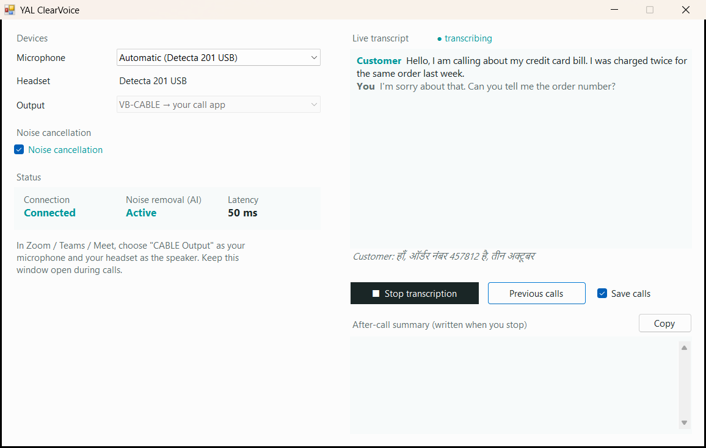
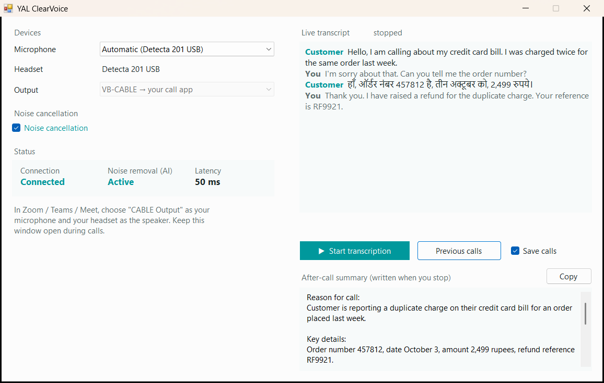
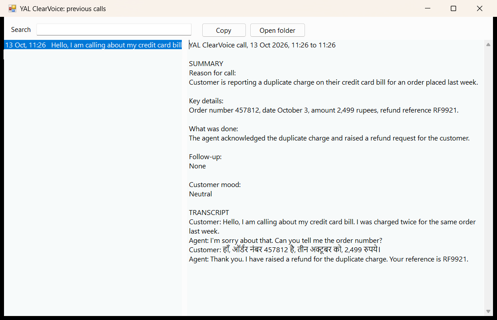

A Windows app for call-center agents. It removes background noise from the agent's voice, writes down calls as they happen, and turns each call into short notes.
An AI model cleans the agent's microphone before the customer hears it. It removes nearby agents talking, keyboards, fans and street noise, and leaves the agent's voice. This runs on the agent's PC, on every call, from the moment the app is open.
The agent clicks Start transcription, and both sides of the call appear as text as people speak: the customer's words and the agent's. It understands English, Hindi and other Indian languages.
When the agent clicks Stop transcription, the app writes a short summary within a few seconds: why the customer called, the key details, what was done and what happens next. One click copies it, ready to paste into your CRM or ticket.
Finished calls can be saved on the agent's PC. Under Previous calls, agents search past calls by any word, such as an order number, and read or copy them again.
The app doesn't replace your softphone, dialer, Zoom or Teams. It sits between the agent's headset and that software. Setup makes the cleaned voice Windows' default microphone, so calling apps that use the default microphone pick it up with no changes. An app set to one particular microphone needs "CABLE Output" chosen once in its audio settings.
If your headsets have their own noise reduction, nothing changes: the headset works first and the app cleans what's left.
YAL ClearVoice opens by itself when Windows starts. Leave it open: noise removal runs on every call without anything to click.
When a call starts, click Start transcription if you want it written down.
Talk as usual. The customer's words appear on the right, with yours in grey.
At the end, click Stop transcription. The summary appears below within a few seconds.
Click Copy and paste the notes wherever you record calls.


Every summary uses the same five headings, so notes look the same across agents. This is the summary the app wrote for the example call above, unedited.
Summaries and transcripts are written by AI, so agents should check names, numbers and amounts before saving them to your records.

| What | Where it goes | When |
|---|---|---|
| Agent's voice, for noise removal | Stays on the PC | Always |
| Call audio, for the transcript | Sarvam AI's speech-to-text service | Only between Start and Stop |
| Transcript, for the summary | The summary server provided by YAL | When the agent clicks Stop |
| Saved calls (text) | Stays on the PC | When Save calls is ticked |
The app never saves call audio, only text. In this test version the connection to the summary server is not encrypted (plain HTTP).
One file, YAL ClearVoice Setup.exe, installs everything on a PC:
Plug in the agent's headset.
Double-click YAL ClearVoice Setup.exe and click Install. Windows asks for permission once; if it also asks to install device software from VB-Audio, click Install there too.
Click Restart now when setup asks. After the restart, YAL ClearVoice opens by itself.
Setup installs the app, VB-CABLE (the virtual microphone the app uses) and the transcription and summary settings. It sets the headset as the speaker and the cleaned voice as the microphone. To remove it, use Windows Settings, Apps, YAL ClearVoice, Uninstall. That also gives the calling apps the headset microphone back. For many PCs at once, IT can run the setup with /silent.
No. The app adds about 50 milliseconds, well below what people notice on a phone call.
The call carries on. The agent's voice still reaches the customer, just without the cleaning, and the app's status shows that noise removal isn't active.
It never saves audio. It writes text only while the agent has transcription switched on, and keeps that text on the agent's PC if Save calls is ticked.
Transcription stops by itself after 10 minutes with nobody speaking.
Yes, in this test version. The setup isn't digitally signed yet, so Windows asks once. Click More info, then Run anyway.